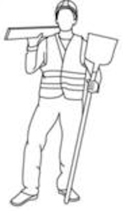

Eventos — Día de la Niñez
Jornadas recreativas que organizan los voluntarios de cada sede de TECHO para las infancias del barrio, además del trabajo de construcción. El Día de la Niñez es el evento más conocido: una tarde de juegos, actividades y meriendas pensada junto a las familias, que forma parte del vínculo comunitario que TECHO sostiene más allá de las obras.
Qué le queremos contar al visitante
- Que el trabajo de TECHO no termina cuando se entrega una vivienda: la organización sostiene presencia en el barrio a través de este tipo de actividades.
- Cómo se arma un evento: se coordina con las familias y con vecinos referentes del barrio, no es algo que TECHO "trae de afuera" sin consulta.
- El rol del voluntariado social (distinto del voluntariado de construcción): quienes organizan juegos, meriendas y actividades no necesariamente participan de la obra.
Actividades y experiencias del visitante
- Sumarse como voluntario de una jornada recreativa: juegos grupales, postas, pintura de rostros o talleres para las infancias del barrio.
- Colaborar en la organización previa: armado de kits de merienda, compra o recolección de materiales para los juegos.
- Compartir la jornada con las familias del barrio, no solo con otros voluntarios: es una actividad pensada para integrar, no solo para "asistir".
Datos útiles
- Ubicación
- Barrios donde TECHO tiene trabajo sostenido (a confirmar barrio puntual con la sede local, según calendario de eventos del año).
- Horario
- Tarde de fin de semana, aproximadamente 14:00 a 18:00.
- Duración
- Media jornada (4 horas aprox.), sin trabajo de obra.
- Acceso
- Inscripción previa como voluntario a través de la sede de TECHO; no requiere experiencia en construcción.
Imágenes que se proponen utilizar
- Foto general de la jornada con niños, niñas y voluntarios jugando.
- Foto de algún juego o posta armada especialmente para el evento.
- Foto de la merienda compartida entre voluntarios y familias.
- Foto de detalle de algún taller (pintura de rostros, manualidades, etc.).
Pendiente: reemplazar por fotos propias de un Día de la Niñez u otro evento real (responsable: integrante a cargo de este punto).
Recomendaciones para el visitante
No hace falta experiencia previa con chicos ni con TECHO: los coordinadores de la jornada explican la dinámica de cada juego antes de empezar.
Se recomienda ropa cómoda y llevar protector solar si el evento es al aire libre. La actitud más valiosa es la disposición a jugar y compartir el tiempo con las familias del barrio.
